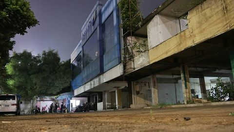
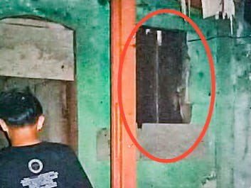
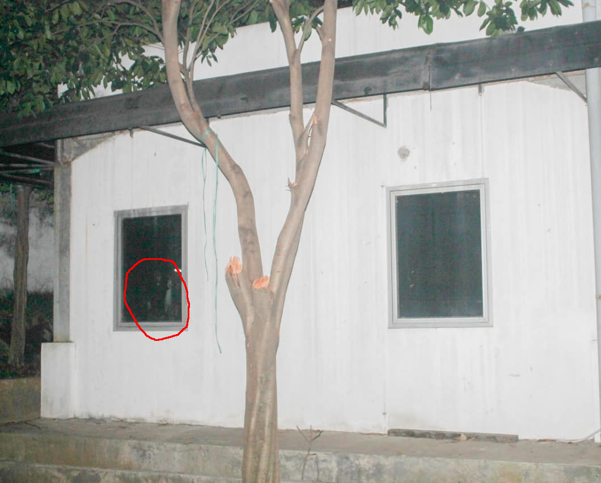
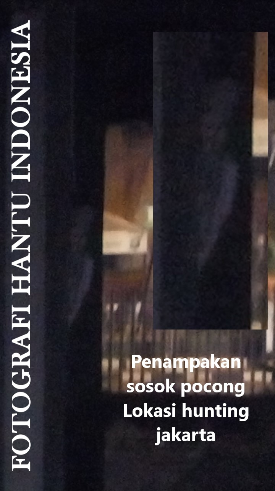

Sejarah Berdiri
Awal mula dari berdirinya FHI dikarenakan beberapa pendirinya merasa bosan dengan genre fotografi yang itu - itu saja sehingga memutuskan untuk mencoba genre baru yaitu memfoto mahluk tak kasat mata atau hantu.
Dan tujuan lain dari didirikannya komunitas ini juga untuk mewadahi para fotografer yang penasaran ingin mencoba dan juga untuk orang orang yang penasaran bagaimana hantu bisa tangkap oleh kamera.
Filosofi yang dipegang oleh FHI adalah membuktikan bahwa hantu juga bisa ditanggkap melalui kamera tanpa harus melalui ritual seperti membakar dupa, dan lain - lain.
Kriteria Lokasi

Untuk setiap lokasi yang akan di datangi dari FHI sendiri menerapkan beberapa kriteria yaitu:
- Memiliki mitos atau cerita mengenai penampakan ditempat tersebut,
- Memili ruangan lebih dari 2 untuk bangunan,
- Meminta izin dari pihak pemilik lokasi tersebut baik itu ketua RT, Satpam, atau warga sekitar.
Untuk kriteria lokasi yang akan di datangi selain dari yang sudah disebutkan kami juga melarang penyebutan nama lokasi spesifik untuk menghindari hal - hal yang tidak perlu.
Bukti Foto
Mengenai bukti foto penampakan hantu yang sudah ditangkap oleh kamera, kami menerapkan beberapa kriteria yaitu:
- Pengambilan foto dilakukan 2 kali untuk perbandingan dari foto pertama dan kedua.
- Perhatikan settingan kamera dalam mengambil objek foto, jangan terlalu terang dan jangan terlalu gelap.
Genderuwo Penghuni Ruko di Depok

Pada foto ini diambil di sebuah ruko 3 lantai di Depok, pada awalnya kami diceritakan oleh penyewa ruko tersebut yang kebetulan adalah kenalan salah seorang anggota kami, dimana setiap hari penyewa ruko tersebut sering mengalami gangguan hal gaib dan kami diminta untuk foto di dalam. Nah ketika salah satu penyewa ingin di foto ketika berada di dalam muncullah sosok genderuwo seperti terlihat pada foto.
Pada awalnya penyewa ruko tersebut bercerita kepada kami bahwa ruko tersebut sering terlihat tutup padahal sedang buka dan di dalam ada orang, selain itu sering terdengan tembok dipukul, terdengan suara anak kecil bermain dari lantai 2.
Pocong di Villa Terbengkalai

Awal mula villa ini terbengkalai karena pemilik dari villa ini sering mendapatkan gangguan dari mahluk gaib dan menurut penuturan warga sekitar dan juga penjaga villa tersebut sering sekali terdengar suara anak kecil bermain dan suara perempuan menangis tetapi setelah dicek ternyata tidak ada siapa - siapa.
Kuntillanak di Bekas Rumah Mewah

Lokasi rumah mewah ini kami dapatkan dari sebuah pelayan di cafe daerah Tangerang Selatan yang mana pada awalnya akan dijual oleh pemiliknya dan akhirnya dibiarkan terbengkalai.
Akhirnya pada saat penelusuran kami mendapat beberapa gangguan berupa suara gamelan dan pada saat berkeliling ke belakang rumah akhirnya mendapatkan foto seperti yang terlihat.
Kuntillanak di Bekas Pabrik Terbengkalai Depok

Awal mula terbengkalainya pabrik ini dikarenakan sering terjadinya kesurupan masal kepada karyawannya dan juga banyaknya kematian akibat meminta tumbal dari penunggu pabrik ini.
Bahkan pada saat kami datang dan bertanya kepada penjaga, penjaga tersebut meminta untuk tidak membuka ruangan belakang dan apabila sampai membuka penjaga tersebut tidak mau bertanggung jawab terhadap resiko yang terjadi dikarenakan ruangan belakang dari pabrik tersebut tempat dimana banyak karyawan tewas akibat dari mahluk gain tersebut meminta tumbal.
Pocong di Bekas Ruko

Ruko ini terdapat di kawasan pertokoan di daerah Jakarta dan pada awalnya digunakan sebagai sebuah bank hingga akhirnya ditinggalkan dan menjadi terbengkalai.
Pada saat kami bertanya mengenai sejarah kenapa ditinggalkannya Ruko ini, disebabkan kesurupan masal pada karyawan bank, banyak terjadi gangguan seperti bangku yang sering bergeser, telpon yang berdering pada malam hari saat operasional bank sudah tutup, dan lain -lain.
Penutup
Sebagai penutup disini kami tidak bermaksud menantang atau yang lainnya, kami disini hanya bermaksud untuk membuktikan bahwa mahluk gaib juga bisa tertangkap kamera atau bisa dibuktikan secara teknologi, seperti dari hasil foto yang sudah diperlihatkan diatas.
Dan jangan lupa juga klik sosial media kita di Fotografi Hantu Indonesia